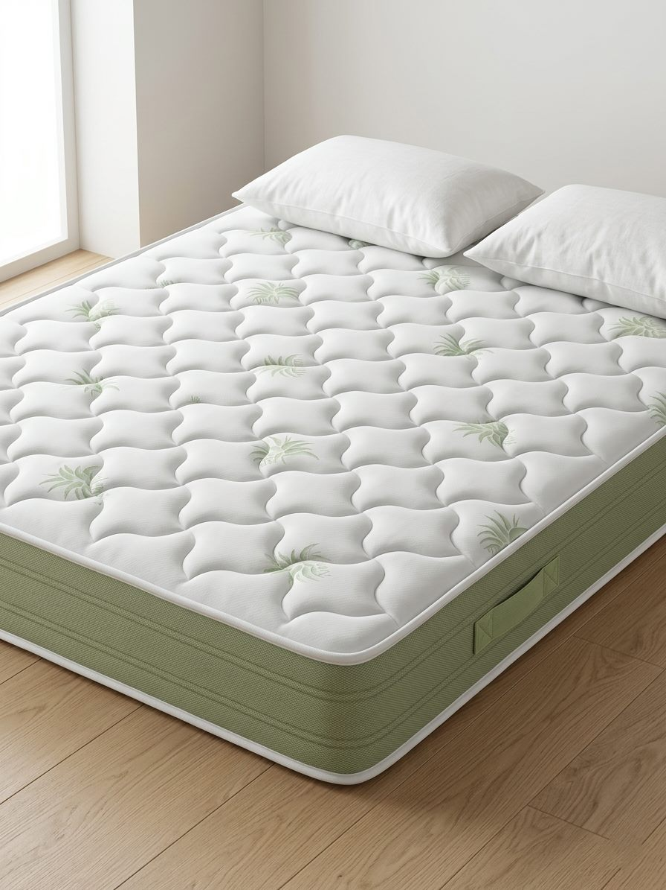

Made in ItalyMaterasso in poliuretano H25
ANDROMEDA
Rigidità medio · altezza 25 cm
Materasso in poliuretano con sostegno ottimale e traspirante. Struttura in poliuretano espanso ad alta resistenza e tessuto stretch aloe vera.
PoliuretanoErgonomicoAnallergicoNO-CFC
Guarda scheda tecnica
Richiedi informazioni su WhatsApp